London Transport concrete lamp posts
In the past London Transport have manufactored a lot of their own stuff in-house. This includes their own concrete.
From the 1920s to the 1980s London Transport manufactored their concrete at the Parsons Green works. The concrete items manufactored inclkude bus stops, fencing panels and lamp posts.
Not much is known about the Parsons Green works. There only apears to be one surviving photo of it on the internet. Click here to see it.
1930s
London Transport manufactured lamp posts for the 1930s Loughton station on the central line. This was before London Underground took over and the line became the central line. At this time the station was still part of LNER.
Notice that these lamp posts are different from the others at this end of the central line. Notice that the panels either side of the lamp post does not have concrete in the shape of the roundal (unlike the others at nearby station). Looking at some old photo of the station this wasn't originally the case. The concrete either side of the lamp post has been changed at some point. It originally had the concrete shaped to the roundal and some weird long sticking out bits where infomation boards were. Today the concrete pannels either side have no roundal moulding, and the lamp posts have been modernized. Notice color change on the concrete where infomation boards used to be. Click here to see these with the original lamps. and also Click here to see the original concrete pannels and lamps from a different angle.
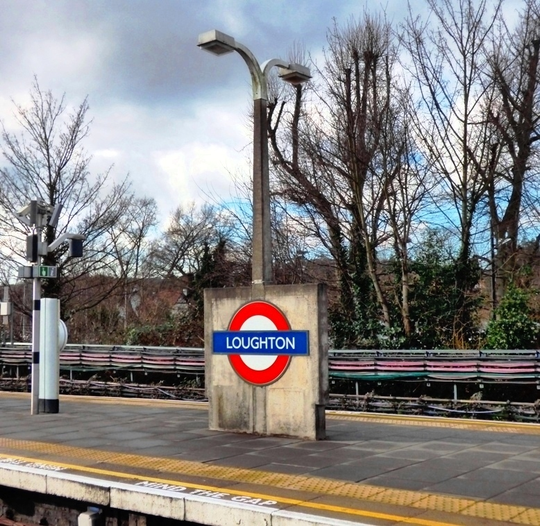
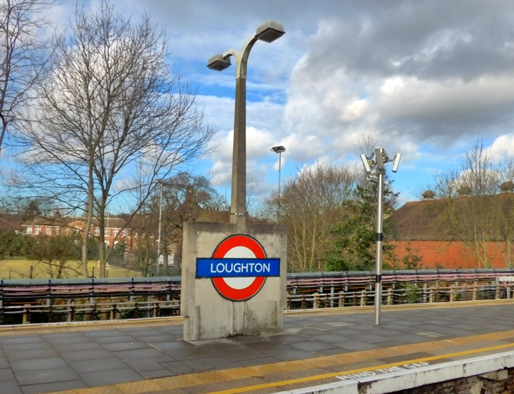
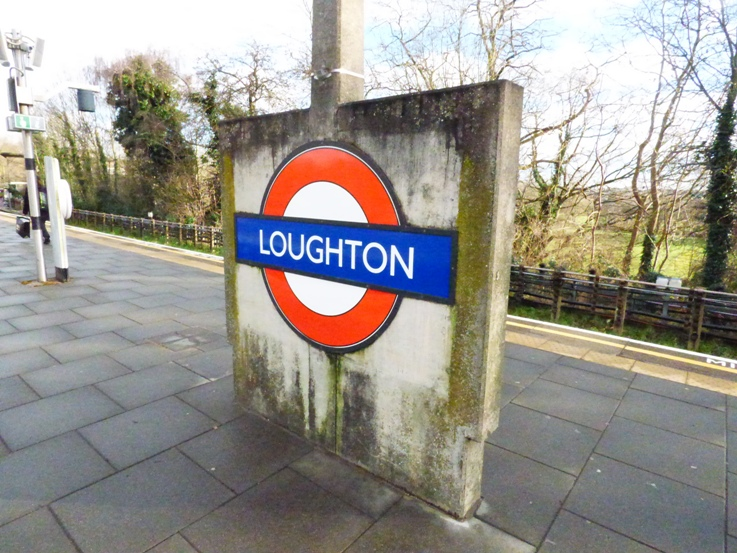
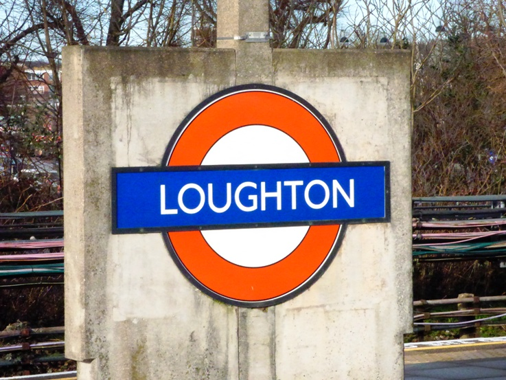
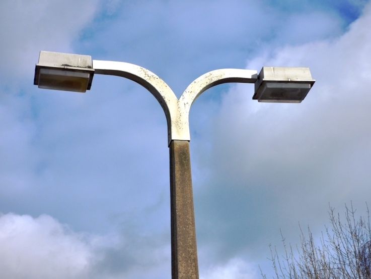
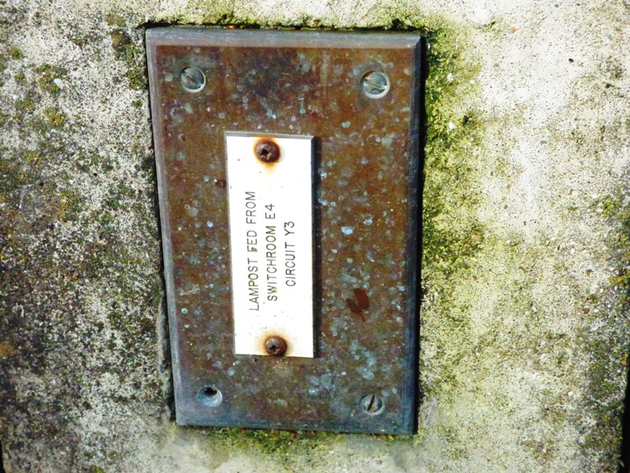
1940s
When London Underground took over the railway line and turned it into the top end of the central line, they refurbished a lot of the stations and added concrete fencing and concrete roundals with intergrated lamp post.
These lamp posts are still in almost perfect condition today. The lamp posts are square the whole way and curve out from the post to where the lamp is. The design looks similar to GEC's concrete lamp posts.
The lamp posts have sadly had their lamps replaced in the 80s/90s with a square Phosco lamp. These lamp posts can be found at Barkingside, Hainault, Grange Hill, Chigwell and Snaresbrook. Click here to see the ones at Barkingside with original lamps.
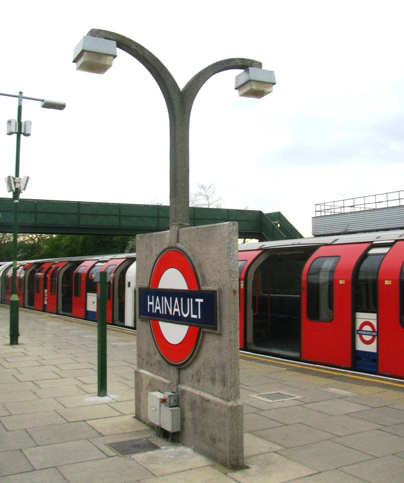
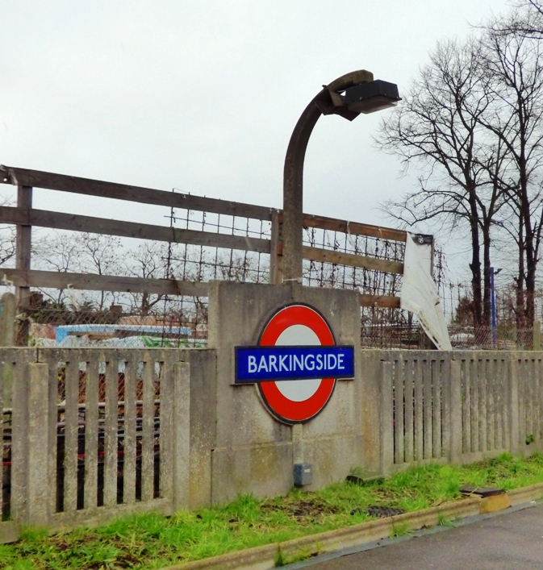
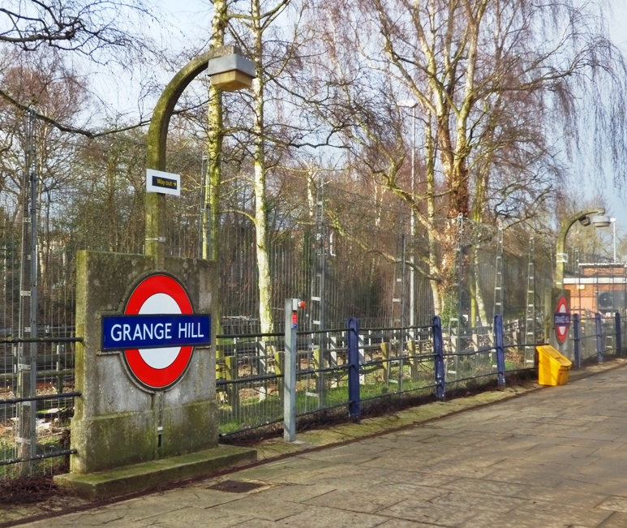
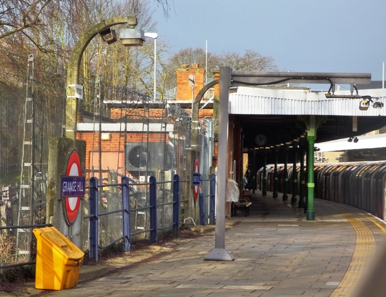
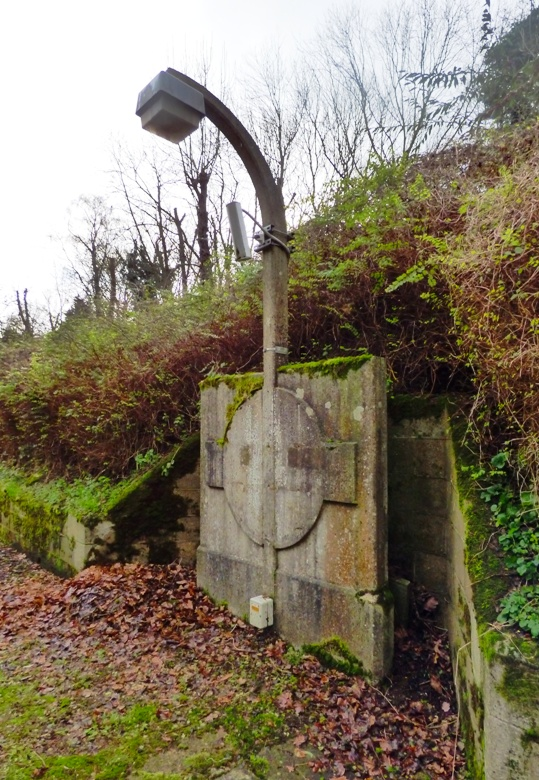
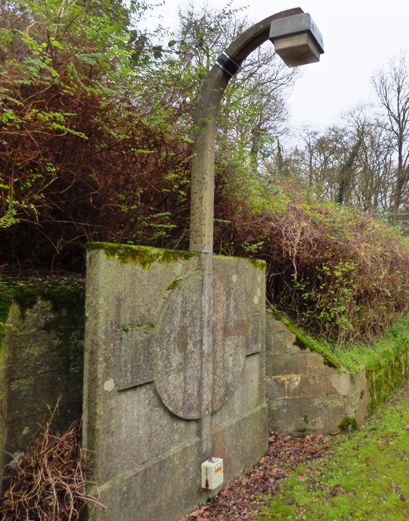
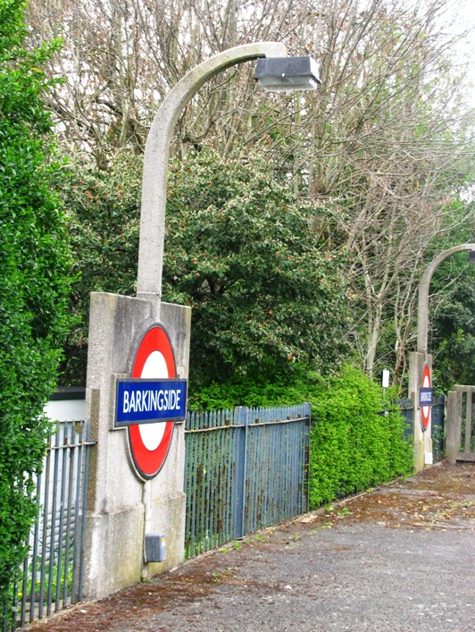
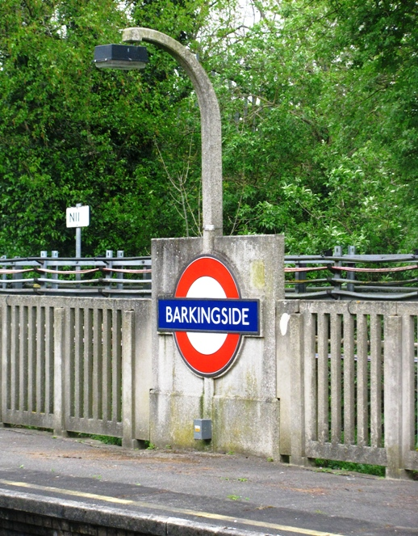
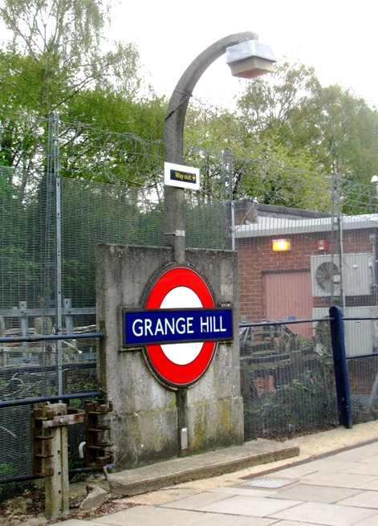
Lamp posts outside Roding Valley.
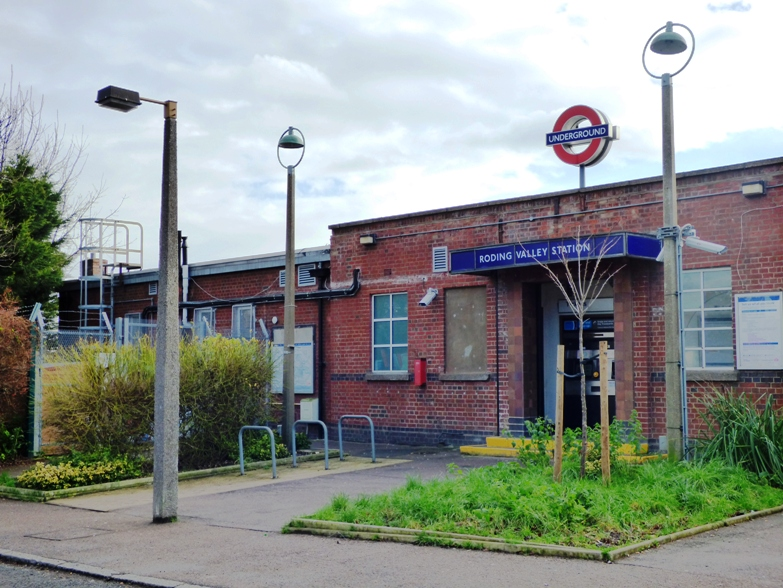
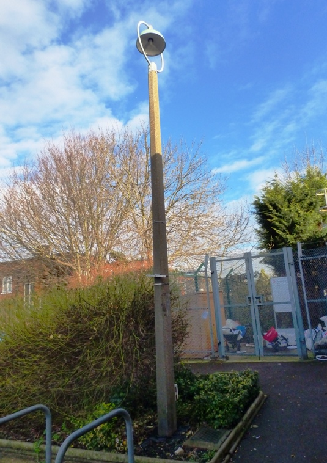
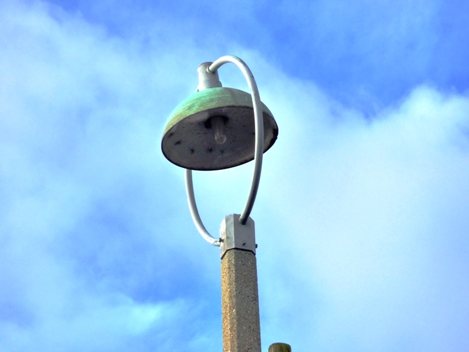
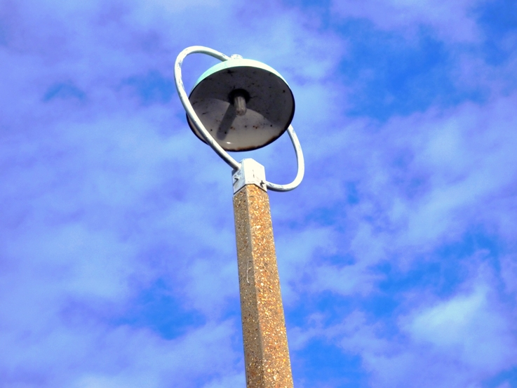
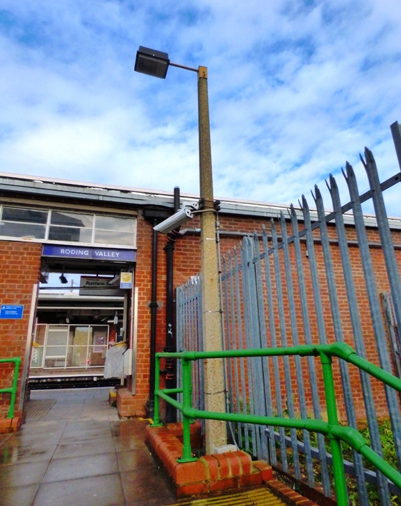
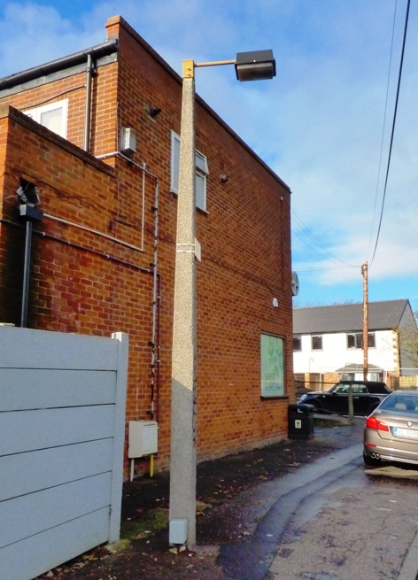
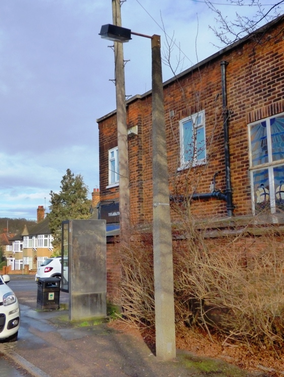
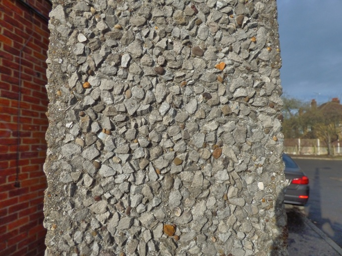
Click here to go to the Beno lamp post guide homepage